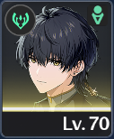
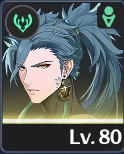

Story & Info
Release date: 23.05.2024
Wuthering Waves is set in the post-apocalyptic world of Solaris-3, ravaged by massive disasters known as Laments that reshaped society and unleashed monster threats called Tacet Discords. We play as the mysterious Rover, who awakens with no memory and embarks on a journey across various regions meeting foes and allies, confronting strange phenomena, and uncovering the secrets of our own origins.
Along the way the Rover absorbs the power of Tacet foes and becomes entangled in events that could define the future of humanity as they navigate political tensions, supernatural forces, and the gradual recovery of a shattered world.
Battle Mechanics
Combat in Wuthering Waves is made up of fast-paced battles that blend offensive combos, timing-based dodges and parries, as well as dynamic character swapping. Characters build a shared Concerto Energy by attacking and dodging; when full, swapping triggers a unique Outro Skill from the leaving character and an Intro Skill from the entering one usually giving various buffs.
Combat also emphasizes mastery of normal/heavy attacks, Resonance Skills and Liberations (powerful ultimate abilities), and precise defensive actions like perfect dodges and counters, making fights feel fluid and reactive.
My Team
|
 |
 |